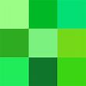

The color green affects us physically and mentally in several different ways. Green is soothing, relaxing, and youthful. Green is a color that helps alleviate anxiety, depression, and nervousness. Green also brings with it a sense of hope, health, adventure, and renewal, as well as self-control, compassion, and harmonyThe green color is often used to indicate safety in the advertising of drugs and medical products.
A crouton is a piece of rebaked bread, often cubed and seasoned, that is used to add texture and flavor to salads notably the Caesar salad as an accompaniment to soups and stews, or eaten as a snack food.